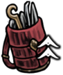
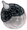
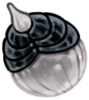
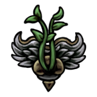
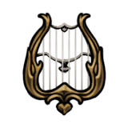

Track your Hollow Knight: Silksong progress with ease!
SHAW!
Completion: 0.00%
Tools
Red Tool Locations
Tool
Location
Percentage (total: 18%)
Map
1
Straight Pin
Located in The Marrow inside of Grindle's cell.
1%
2
Threefold Pin
Located in Greymoor at Craw Lake. The tool is in a small room at the top right of the cavern, guarded by a Tallcraw.
1%
3
String Shard
Purchased from Forge Daughter in Deep Docks for 140 and 1.
1%
4
Tacks
Reward for completing the Roach Guts Wish.
1%
5
Longpin
Located in Shellwood above the main entrance to Bellhart, blocked by a Wood Wasp nest.
1%
6
Curveclaw
Purchased from Mottled Skarr in Hunter's March for 140.
Alternatively, if Mottled Skarr is dead, it can be found locked behind a gauntlet north of his
original location.
1%
Curvesickle
Obtained in Act 3 by giving the Curveclaw to a Mottled Skarr Scout in the target practice room above the Far Fields Bellway station.
7
Throwing Ring
Reward for completing the Trail's End Wish.
1%
8
Pimpillo
Crafted in a hidden room in northwest Greymoor for 1.
1%
9
Conchcutter
Found inside the Coral Tower in Sands of Karak.
1%
10
Silkshot (Original)
Obtained by repairing the Ruined Tool found in Weavenest Murglin.
Repairing at a room near the peak of Mount Fay for
1 provides this variant.
1%
Silkshot (Twelfth Architect)
Obtained by repairing the Ruined Tool found in Weavenest Murglin.
Repairing at Twelfth Architect for
140 and
1 provides this variant.
Silkshot (Forge Daughter)
Obtained by repairing the Ruined Tool found in Weavenest Murglin.
Repairing at Forge Daughter for
240 and
1 provides this variant.
11
Delver's Drill
Found on a crafting table in the southwest of the Underworks.
1%
12
Cogwork Wheel
Purchased at Twelfth Architect for
360 and
1.
1%
13
Cogfly
Crafted in a room in High Halls for 1.
1%
14
Rosary Cannon
Found behind a locked door in High Halls east of the sub-area The Forum.
1%
15
Voltvessels
Found behind a hidden wall in the northeast of the Memorium.
1%
16
Flintslate
Found in Deep Docks, beyond the Simple Key door.
1%
17
Snare Setter
Found in a secret room within Weavenest Atla.
Used to complete the Silk and Soul Wish.
Permanently removed from inventory after Wish is completed.
0% - Needed to enter Act 3
18
Flea Brew
Obtained from the Flea Caravan after completing the The Lost Fleas Wish.
1%
19
Plasmium Phial
Reward for completing the Alchemist's Assistant Wish.
1%
20
Needle Phial
Given to complete Alchemist's Assistant and Advanced Alchemy Wishes, after which it is unobtainable.
0% - Needed for the Plasmium Phial
Blue Tool Locations
Tool
Location
Percentage (total: 21%)
Map
1
Druid's Eye
Reward for completing the Berry Picking Wish.
1%
Druid's Eyes
Bring 4 additional Mossberries to Moss Druid after
completing the Berry Picking Wish. Replaces the Druid's Eye.
2
Magma Bell
Purchased from Forge Daughter for
110 and
1.
1%
3
Warding Bell
Found on a body in Far Fields.
1%
4
Pollip Pouch
Reward for completing the Rite of the Pollip Wish.
1%
5
Fractured Mask
Purchased from Mottled Skarr for 260.
Can also be found next to his body if he died before it was purchased.
1%
6
Multibinder
Purchased from Frey for 880
after completing the My Missing Courier Wish.
1%
7
Weavelight
Found in Weavenest Atla after defeating a pair of Moss Mothers.
1%
8
Sawtooth Circlet
Purchased from Twelfth Architect for
230 and
1.
1%
9
Injector Band
Found in Whiteward.
1%
10
Spool Extender
Bought from Jubilana for 720.
1%
11
Reserve Bind
Reward for completing the Final Audience Wish.
1%
12
Claw Mirror
Reward for defeating Trobbio in The Stage.
1%
Claw Mirrors
Reward for defeating Tormented Trobbio in The Stage. Replaces the Claw Mirror.
13
Memory Crystal
Found in a hidden room in southwest Mount Fay.
1%
14
Snitch Pick
Bought from Grindle for 740.
1%
15
Volt Filament
Reward for defeating Voltvyrm in Voltnest.
1%
16
Quick Sling
Found behind a breakable ceiling in Bilewater.
1%
17
Wreath of Purity
Found in a secret passage within Putrified Ducts.
1%
18
Longclaw
Reward for completing either the Broodfeast or Runtfeast Wishes.
1%
19
Wispfire Lantern
Reward for defeating Father of the Flame in Wisp Thicket.
1%
20
Egg of Flealia
Reward from Fleamaster Mooshka after finding all 30 Fleas.
1%
21
Pin Badge
Reward for completing Fatal Resolve Wish.
1%
Yellow Tool Locations
Tool
Location
Percentage (total: 12%)
Map
1
Compass
Purchased from Shakra for 70.
1%
2
Shard Pendant
Found in The Marrow.
1%
3
Magnetite Brooch
Purchased from Pebb for
120, or from Grindle for
220 during Act 3.
1%
4
Weighted Belt
Purchased from Mort for 160.
In Act 3 it can be found next to his body if it has not been purchased yet.
1%
5
Barbed Bracelet
Found in Sinner's Road.
1%
6
Dead Bug's Purse
Found in the Wormways.
1%
Shell Satchel
Found in the Wormways (Steel Soul Mode only).
7
Magnetite Dice
* Act 1: Given by Lumble the Lucky after achieving 5 wins more than him.
* Act 2: Found beside Lumble the Lucky's corpse in Blasted Steps.
* Act 3: Purchased from Grindle for 300.
1%
8
Scuttlebrace
Purchased from Twelfth Architect for
140 and
1.
1%
9
Ascendant's Grip
Purchased from Jubilana for 350.
1%
10
Spider Strings
Purchased from Jubilana for 320
after completing the The Lost Merchant Wish.
1%
11
Silkspeed Anklets
Found inside Weavenest Cindril in Far Fields.
1%
12
Thief's Mark
Purchased from Grindle for 350.
1%
Crafting Kit / Tool Pouch Upgrade Locations

Item
Location
Requires
Percentage (total: 8%)
Map
1
Tool Pouch
In Act 1 or Act 2, purchased from Mort in Pilgrim's Rest for 220.
-
1%
In Act 3, purchased from Grindle in Blasted Steps for 220.
Faydown Cloak
2
Tool Pouch
In Act 1 or Act 2, reward from Loddie in The Marrow after beating his first challenge.
Complete SAVE: The Threadspun Town
1%
In Act 3, found in Loddie's former location, on a table
-
3
Tool Pouch
Reward from Nuu in Halfway Home for completing the Bugs of Pharloom wish.
Hunter's Journal
1%
4
Tool Pouch
Reward from Fleamaster Mooshka in Fleatopia after helping the Flea Caravan move.
Rescue 22 Fleas Visit Pale Lake
1%
1
Crafting Kit
Purchased from Forge Daughter in Deep Docks for 180.
-
1%
2
Crafting Kit
Reward from Creige in Halfway Home for completing the Crawbug Clearing wish.
Complete SAVE: The Threadspun Town
1%
3
Crafting Kit
Purchased from Twelfth Architect in Underworks for 450.
Clawline
1%
4
Crafting Kit
Purchased from Grindle in Blasted Steps for 700.
Faydown Cloak
1%
Skills & Abilities
Silk Skill Locations
Tool
Location
Requirements
Percentage (total: 6%)
Map
1
Silkspear
Found in a Weaver Burial Spire in the Mosshome area of Moss Grotto.
Access to Bone Bottom
1%
2
Thread Storm
Found in a Weaver Burial Spire in the north of the Craw Lake area of Greymoor
Defeat an arena of Craws, Tallcraws, and Squatcraws
1%
3
Cross Stitch
Found in Exhaust Organ
Cling Grip Defeat Phantom
1%
4
Sharpdart
Found in a Weaver Burial Spire in Weavenest Karn in the Wormways. Clawline is recommended
Needolin
1%
5
Rune Rage
Found in the lower area of The Slab
Key of Apostate Key of Heretic Defeat First Sinner
1%
6
Pale Nails
Found at the top of the Cradle in Act 3
Be in Act 3 Silk Soar
1%
Silk Heart Locations
Source
Location
Requirements
Percentage (total: 3%)
Map
1
Defeating the Bell Beast
The Marrow
Requires Silkspear
1%
2
Defeating The Unravelled
Whiteward
Requires the Surgeon's Key
1%
3
Defeating Lace
The Cradle
Requires the Threefold Melody
1%
Ability Locations
Ability
Location
Requirements
Percentage (total: 7%)
Map
1
Swift Step
Found in a Weaver Burial Spire in the northernmost area of Deep Docks.
-
1%
2
Cling Grip
Found in a Weaver Burial Spire in Shellwood, past a platforming section
Defeat Sister Splinter
1%
3
Needolin
Acquired in Bellhart after defeating Widow
Cling Grip Defeat Widow
1%
4
Clawline
found in a Weaver Burial Spire past a course of lava in the central room of the Cauldron within the Underworks. There are two ways to access this area: either through a side passage in Whiteward, or via a lift that unlocks after defeating Trobbio.
Defeat Trobbio or Surgeon's Key
1%
5
Sylphsong
Acquired from Eva in Weavenest Atla
Needolin Acquire 32 Crest Slots
1%
6
Silk Soar
Found in Act 3 on Hornet's first visit to The Abyss, in a Weaver Burial Spire behind a Needolin door in Weavenest Absolom.
Be in Act 3 Confront the Snail Shamans
1%
7
Needle Strike
Acquired after speaking with Pinstress in Blasted Steps.
-
1%
Crests
Crest Locations
Crest
Location
Requirements
Percentage (total: 6%)
Map
1
Reaper Crest
Found in the Chapel of the Reaper, a sub-area of Greymoor found on the western side directly above the Moorwing arena.
-
1%
2
Wanderer Crest
Found inside the Chapel of the Wanderer in Bonegrave.
Cling Grip
1%
3
Beast Crest
Obtained inside the Chapel of the Beast after defeating the Savage Beastfly.
Defeat Savage Beastfly
1%
4
Witch Crest
The Witch Crest is obtained by completing both the Rite of Rebirth and Infestation Operation Wishes.
-
1%
5
Architect Crest
The Architect's Crest is found in the Chapel of the Architect,
an area in the Underworks unlocked with the Architect's Key.
The key is sold by Twelfth Architect for
110
if Hornet owns at least 25 tools.
Own 25 tools
1%
6
Shaman Crest
Obtained from the Ruined Chapel in Moss Grotto during Act 3, requiring the Silk Soar ability to reach.
Be in Act 3 Silk Soar
1%
Cursed Crest
Item/NPC
Location
Map
1
Twisted Bud (Item)
The Twisted Bud can be found in Bilewater, in a crib-like root. This area is accessed by falling from a hidden passage in the easternmost side of Whispering Vaults.
2
Greyroot (NPC)
Shellwood
3
Yarnaby (NPC)
Resides in a locked Bellhome in Greymoor.
4
Crull and Benjin (NPCs)
Crull and Benjin can be found in Sinner's Road.
5
Witch Crest
Yarnaby's Bellhome
Needle
Needle Upgrades
Needle Upgrade
Cost
Damage
Percentage (total: 4%)
1
Needle → Sharpened Needle
Free
9 (+80%)
1%
2
Sharpened Needle → Shining Needle
 1
13 (+44.4%)
1%
3
Shining Needle → Hivesteel Needle
450
1
17 (+23.5%)
1%
4
Hivesteel Needle → Pale Steel Needle
680
1
21 (+19%)
1%
Pale Oil Locations 
Requires
Location
Map
1
Cling Grip
In northeast Choral Chambers, accessed through the adjoining room in Whispering Vaults.
2
Swift Step Cling Grip Faydown Cloak
Reward from Loyal Mergwin upon completing Great Taste of Pharloom.
3
Rescue all Fleas Be in Act 3
Reward from the Flea Caravan upon completing Ecstasy of the End.
Great Taste of Pharloom 
Item
Source
Map
1
Mossberry Stew
The Mossberry Stew is freely given by the Moss Druid in Mosshome during the wish.
2
Vintage Nectar
The Vintage Nectar can be bought from Creige in Halfway Home for
480. After payment,
Creige allows Hornet to enter his basement where, after defending
against a Skarr ambush, she can acquire the nectar. This step
cannot be completed while Hornet is cursed as Creige will not
offer to sell the Vintage Nectar to Hornet.
3
Courier's Rasher
The Courier's Rasher is given as a delivery item by Couriers Tipp & Pill
in Bellhart after having completed the My Missing Brother wish, and
operates under the same rules as a Delivery Wish. It has a total of
8 hit points that slowly drain at a rate of 1 hit point every 47 seconds.
As long as the hit point has not fully drained, it is still considered a
full hit point when the item takes damage. To deliver it in time, make sure
to beat The Last Judge beforehand.
4
Crustnut
The Crustnut can be found hidden within the Sands of Karak, behind various
breakable walls and floors.
5
Pickled Muckmaggot
The Pickled Muckmaggot can be obtained after defeating Disgraced Chef Lugoli
in Sinner's Road. The Faydown Cloak is required to enter their arena.
Other Items
Mask Shard Locations
Source
Requirements
Percentage (total: 5%)
Map
Accessible in Act 1
1
Bought from Pebb in Bone Bottom for 300
Requires getting to Bone Bottom
0.25%
In Act 3, Bought from Grindle in Blasted Steps for 320
Requires Faydown Cloak
0.25%
2
Lower Wormways accessed through Mosshome
Behind a breakable wall, just in front of the door requiring a Simple Key
0.25%
3
A passageway between the Marrow and Deep Docks
Accessed from The Marrow. Cling Grip recommended
0.25%
4
Area above Seamstress's home in Far Fields
Requires Drifter's Cloak
0.25%
5
Centre of Shellwood
At the end of a platforming challenge behind a breakable wall
0.25%
6
East Weavenest Atla
Requires Needolin. Behind breakable wall
0.25%
Accessible in Act 2
7
Sold by Jubilana in Songclave for 750
Complete the The Wandering Merchant Wish
0.25%
8
West Cogwork Core past enemy gauntlet
Accessible after defeating the Cogwork Dancers
0.25%
9
Behind moving box puzzle in central Whispering Vaults
None
0.25%
10
Reward for completing the Savage Beastfly Wish
Defeat Fourth Chorus in Far Fields and Savage Beastfly in Hunter's March, enter Songclave
0.25%
11
Inside Skull Cave in east Far Fields
Requires Clawline and Drifter's Cloak
0.25%
12
Southwest Mount Fay, west of the bench
Requires Faydown Cloak
0.25%
13
Northeast part of the Slab
Requires Key of Apostate and Faydown Cloak. Challenge can be skipped with Silk Soar
0.25%
14
East Bilewater
At the end of a hallway filled with Slubberlugs
0.25%
15
East Wisp Thicket
Requires Faydown Cloak
0.25%
16
West Blasted Steps
Requires Clawline and Faydown Cloak. Challenge can be skipped with Silk Soar
0.25%
Accessible in Act 3
17
Brightvein
Requires Silk Soar
0.25%
18
East Far Fields
Complete the Fastest in Pharloom wish
0.25%
19
Reward for completing the Dark Hearts wish
Complete SEEK: Awaiting the End
0.25%
20
Reward for completing the The Hidden Hunter wish
Meet Skarrsinger Karmelita in Far Fields
0.25%
Spool Fragment Locations
Source
Requirements
Percentage (total: 9%)
Map
Accessible in Act 1
1
Behind a breakable wall in a mossy area above Bone Bottom
None
0.5%
2
Central section of Deep Docks. Take the southwest exit from Forge Daughter's location.
Descend down the vertical room and take the first eastward exit to a large room with
a burning floor. Hop across the platforms to first flip the lever on the far end of
the room, then turn around and hop up the platforms to acquire the Spool Fragment
None
0.5%
3
In Greymoor, above Shakra's bench. Start by wall-jumping off the vertical planks
to the northeast of the Halfway Home, then travel east before pulling a lever that
deploys a lot of balloons. Needle-bounce off the balloons to reach the top of this
large vertical area
Requires Cling Grip to enter the passage
0.5%
4
Sold by Frey in Bellhart for 270
Complete the My Missing Courier Wish
0.5%
5
In a passage in Weavenest Atla. Ascend the east wall after taking the teleporter into
the lower area. Travel west to the first Marrowmaw, jump upwards into the higher passage,
navigate past the second Marrowmaw, and drop down to acquire the Fragment
Requires Needolin to open the Weavenest
0.5%
6
From the Bellway station in The Slab, ascend northwards two levels into a large open room.
Wall-climb off the west wall (without entering the west-most chamber), then jump east across
the tops of the cages before accessing a passage in the ceiling. Travel west along this passage,
passing through the traps, and climb to the top of the outdoor section
Requires Cling Grip and a transport to The Slab
0.5%
Accessible in Act 2
7
At the top of the Grand Gate. If approached from below, strike the scales with an upward
attack to tip them
None
0.5%
8
Central section of the Underworks. Head south from the Ventrica station, then proceed west.
Fight through a combat gauntlet room and continue west to acquire
None
0.5%
9
Given by the Flea Caravan upon their ascent to the Grand Gate
Requires 12 found fleas and Last Judge defeated
0.5%
10
In Whiteward, under the lift. Call up the lift using the buttons on the top, then quickly
jump down the lift shaft and duck into either side passage to let the lift pass.
Dive into the bottom past where the lift normally stops to acquire
White Key
0.5%
11
Southeast section of the lower Cogwork Core. Defeat or dodge a Cogwork Clapper
and continue east and down to acquire
None
0.5%
12
Lower right section of the Underworks. Head east from The Cauldron and descend down a
vertical shaft to a small room with a burning floor. Break the wall on the left to access
None
0.5%
13
Given by Sherma after completing the Balm for the Wounded Wish
White Key
0.5%
14
Sold by Jubilana for 500
Complete the The Lost Merchant Wish
0.5%
15
Southeast section of Deep Docks. First use the Clawline to open the locked gate
on the southeast corner. Open the hatch, descend down into the open cavern,
then Clawline to the far wall and break open the explosive rock.
This opens a platforming challenge across spikes, lava, and more explosive rocks,
before finally leading to the Spool Fragment on the opposite side of the locked door
Requires Clawline and Cling Grip. Faydown Cloak makes acquiring this easier
0.5%
16
In High Halls at the highest point in the left vertical room
Requires Faydown Cloak and Clawline. Challenge can be skipped with Silk Soar
0.5%
17
In the western section of the Memorium. Access the chamber by going west from the
fourth floor (one floor below the Ventrica station), then manoeuvre around the
spikes to access it. Break the vines going south to open the path leading
back to the Memorium entrance
Requires Faydown Cloak and Clawline
0.5%
18
Sold by Grindle for 680
Requires Faydown Cloak and Cling Grip
0.5%
Memory Locket Locations
Area
Location
Requires
Map
1
Hunter's March
Below the Chapel of the Beast.
-
2
Far Fields
In Act 1 or Act 2, purchased from Mort for 150.
-
Blasted Steps
In Act 3, purchased from Grindle for 250.
Requires Faydown Cloak
3
Greymoor
West of the Bellway.
-
4
Bone Bottom
In Act 1 or Act 2, awarded after completing the Volatile Flintbeetles Wish.
Reach Greymoor
The Marrow
In Act 3, found in Survivor's Camp lying on the ground next to Flick the Fixer.
-
5
The Marrow
Northeast of the Bellway station.
Cling Grip
6
Wormways
In the southwest next to a large bug corpse.
Simple Key Cling Grip
7
Bellhart
Purchased from Frey for 330.
Complete SAVE: The Threadspun Town
8
Blasted Steps
In the room above the first bench.
Cling Grip
9
Bilewater
In a hidden room northwest of the Bellway.
-
10
Choral Chambers
Above the Grand Bellway, accessed from the eastern part of the Underworks.
Defeat Phantom or Trobbio
11
Underworks
West of the benches by the confessional.
-
12
Deep Docks
West of the diving bell.
Clawline Defeat Forebrothers Signis & Gron
13
Whispering Vaults
Below the exit to the outside area.
-
14
Sands of Karak
In the first big room to the left.
-
15
Greymoor
Inside of Halfway Home, above the left-hand door.
Faydown Cloak
16
Memorium
In the central area.
Faydown Cloak
17
The Slab
In the shortcut cave between the Bellway area and the upper areas.
Faydown Cloak
18
Bilewater
Held by a corpse in a breakable cocoon just west of the hidden bench. Not visible until the cocoon is broken.
Faydown Cloak
19
Bellhart
In Act 3, above the Bellhome.
Silk Soar
20
Far Fields
In Act 3, east of Skarrsinger Karmelita.
Silk Soar Defeat the black-threaded Skarrgard
Flea Locations
Area
Location
Requires
Map
1
The Marrow
Can be reached after some platforming from the beginning of the room.
Defeat Bell Beast and activate the bellshrine
2
Deep Docks
Behind a breakable wall on the left side of the Deep Docks bellway station.
-
3
Deep Docks
Run left from where Swift Step is obtained and hit the lever in the upper right corner of the room.
Swift Step
4
Deep Docks
Upper section can be reached by using clawline into hoops in the middle of the room below
Clawline
5
Hunter's March
Can be reached after a small platforming challenge.
Defeat the Skarrgard at the entrance of Hunter's March
6
Far Fields
The Flea is inside a cage, with a cage trap just in front of it.
-
7
Far Fields
Can't be accessed through Pilgrim's Rest because of a locked gate;
Hornet must instead access a secret area in Far Fields's Bellway station to reach it.
Drifter's Cloak and Cling Grip
8
Wormways
The Flea is being carried by an Aknid. Defeat it to rescue the Flea.
-
9
Greymoor
Pogo off of the balloons and hug the rightside wall.
Defeat the arena in Craw Lake
10
Greymoor
Reach the top of the left tower in Greymoor.
Cling Grip
11
Greymoor
This Flea is Kratt, who is an NPC rather than a normal lost Flea.
Once freed, he shows up later in the Flea Caravan and opens up a spa.
Found behind a breakable wall above Halfway Home.
Cling Grip
12
Bellhart
Defeat Sister Splinter and head right. Located in the upper most tunnel of the Bellveins in bellhart.
Cling Grip
13
Shellwood
Located below some platforms with stationary enemies.
-
14
Blasted Steps
Located at the top of the room to the left of Blasted Steps's bellway station.
Cling Grip
15
Sinner's Road
A Muckroach is wandering nearby and will attack when Hornet approaches to rescue the Flea.
-
16
Bilewater
Located behind a breakable wall.
-
17
Bilewater
Located left of the upper entrance to the Exhaust Organ.
Complete traversing The Mist
18
Bilewater
Located above of the secret bench room in Bilewater.
Cling Grip
19
Underworks
Can't be initially reached from Underworks.
Reachable from Wisp Thicket behind a breakable
ceiling followed by some short platforming challenges.
Cling Grip, Faydown Cloak
20
Underworks
Inside a room with many Cogwork Haulers.
Faydown Cloak
21
Choral Chambers
Can be reached after a platforming section.
-
22
Choral Chambers
Behind a breakable wall.
With Drifter's Cloak, it can be reached by activating a mechanism below
(accessible through another breakable wall, below the previous one).
Can be reached otherwise by pogoing off of the sawblades.
Drifter's Cloak or Needle-bounce
23
Memorium
Huge Flea fight. Must be defeated after being freed.
Once defeated, the Huge Flea will show up at the Caravan.
Faydown Cloak
24
The Slab
Inside a door covered by mist, with the option to "enter".
-
25
The Slab
The Flea is above the rest bench, in a small chamber to the top-left of the opening.
Faydown Cloak
26
Mount Fay
The Flea is frozen within ice and must be broken free by hitting it with the Needle.
Cling Grip
27
Sands of Karak
Located at the top of the room, reachable behind encrusted coral in the right side of it.
Can alternatively be accessed by using Silk Soar
-
28
Putrified Ducts
Can be reached after getting pulled up by several Barnak, along with some platforming.
Similar to Kratt, Vog is not a normal lost Flea, but an NPC. Once spoken with,
she shows up later at the Flea Caravan.
-
29
Whispering Vaults
Can be reached after a long platforming section.
Section can be reached after passing a hidden passage by jumping
behind the curtains in the room below Vaultkeeper Cardinius's room.
Clawline and Cling Grip
30
Whispering Vaults
At the top of the room, can be reached by pushing a box located in the middle-left of the room.
Cling Grip
Simple Key Locations
Location
Map
1
Bought from Pebb in Bone Bottom for 500.
In Act 3, bought from Grindle in Blasted Steps for 600.
2
At the northeast of Sinner's Road, dropped by a Roachkeeper after defeating it.
3
Bought from Jubilana in Songclave for 650, after completing The Wandering Merchant Wish.
4
Found on a corpse at the bench on the eastern tip of Sands of Karak.
Simple Key Uses
Location
Effect
Map
1
The lower entrance to Wormways from Bone Bottom.
Access to the west side of Wormways.
2
Central Deep Docks, to the south of Forge Daughter.
Access to the lower part of Deep Docks without Clawline.
3
The Green Prince's cell in Sinner's Road.
The Green Prince can be encountered in The Citadel. In Act 3, access to Lost Verdania.
4
High Halls, west of the Ventrica station.
Access to the Rosary Bank.
Silk and Soul 
Item
Source
Map
1
Maiden's Soul
Given by Chapel Maid in Bone Bottom.
2
Hermit's Soul
Given by Bell Hermit in Bellhart.
3
Seeker's Soul
Found on a Snail Shaman's corpse after defeating Groal the Great in Bilewater.